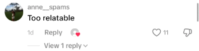
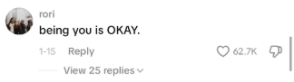

We are a mosaic of the people that surround us. The friends we have, our shared connections, and people who overlap with our daily routines start to influence how we see the world over time. These in-person interactions are already enough to influence our decisions and opinions without adding people we’ve never met online.

The average person spends two hours and twenty minutes on social media every day. That’s over fourteen hours every week of random opinions on the internet being webbed and processed in your brain. Every post, comment, interaction, and story we see influences our own lives without most people even noticing. And most of all, this constant influx of new information leads people to start following something that can be called “The new viral opinion.”
This phenomenon of the “New viral opinion” has affected people’s originality and desire to be apart from a crowd. We consume so much information in such a short amount of time that we don’t stop to think about what we are reading. We agree because we haven’t had the time to step back and look beyond the ideas being fed to us. Algorithms on social media are designed to be a reflection of us and our thoughts, made purely to keep us engaged and thinking, “Wow, this is so me,” with every new idea. We don’t stop to think, “Is it really? Or am I being told I relate?” and instead move on to the next post.

Someone will create a message on social media like a seed they are waiting to grow. Waiting to see if others agree or disagree, and abandoning their original thought to become one with the majority. We have started treating social media less like a place to socialize and more like a place to be approved. The posts we make, and the messages we convey to others, are similar to an analogy of Schrödinger’s critic changing thoughts and opinions based on the audience’s response.
The new viral opinion is most likely seen as a trend or an ongoing joke on social media platforms. It ties closely to crowd mentality and the psychological phenomenon in which people adopt behaviors, emotions, and, most importantly, beliefs based on the message the majority is sending. This often leaves people believing that the messages they consume on social media are their own without realizing how others have interjected them into their thoughts.

We need to start realizing thats its ok to not be like someone else when their spot is already taken. New ideas create environments; we can’t flourish if all we do is remix what we've heard. Start having original thoughts; imagination and consciousness are both enigmas we take for granted.